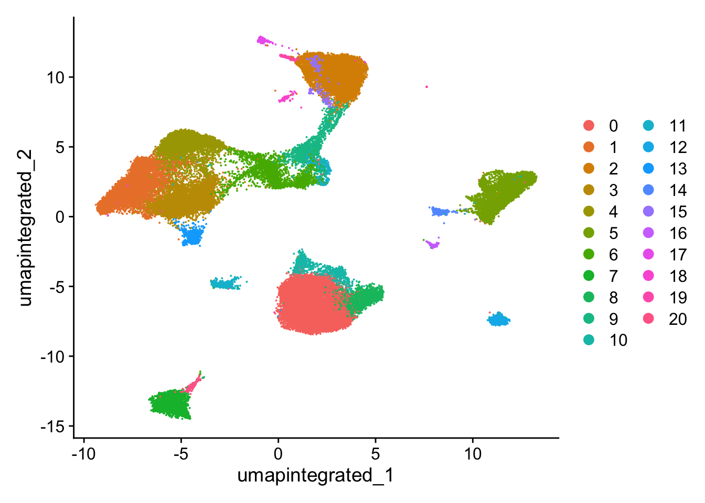
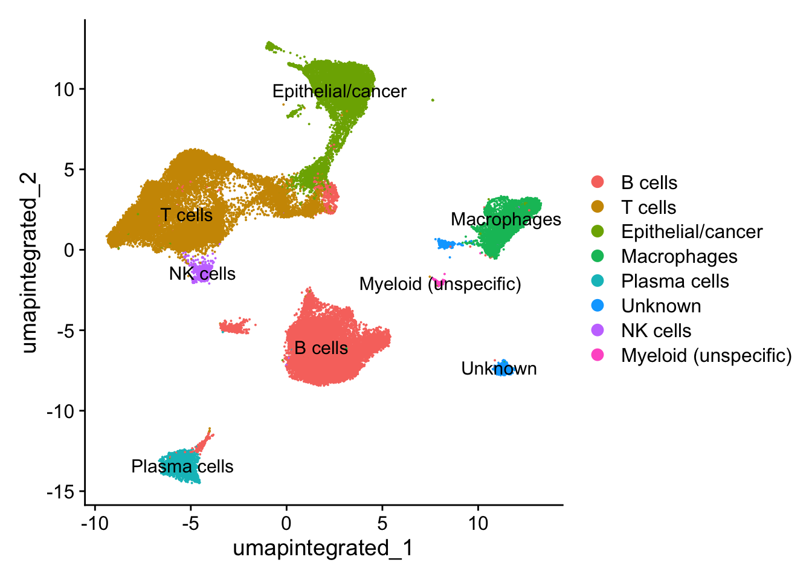

30 多个单细胞数据集整合分析（上）
参考：单细胞多数据集整合示例
有时候，为了扩大数据量和得到更加可靠的结论，我们可能获取和下载了多个单细胞数据集。如果我们只关注某一细胞类型，如T cells或B cells或髓系细胞，那么就需要合并分析这些数据集，提取感兴趣的细胞亚群。这时候有两种方法可以选择：
对各个数据集分别降维分群，然后提取各个数据集的感兴趣细胞亚群并整合到一起
在一开始分析的时候就对这些数据集进行整合，然后分群，提起感兴趣细胞群
这个部分怎么分析并没有一个特定的答案或者规则，具体还是得看数据集适合以上提出的哪种分析顺序。
例如(Gong et al. 2023)就用了第二种方法。选取了三个鼻咽癌单细胞转录组数据： GSE150825, GSE150430, GSE162025。首先对三组数据进行整合，然后选取其中的一部分T细胞进行进一步分析。

这里我们介绍第一种方式，即对各数据集分别降维分群，然后提取并整合各个数据集的感兴趣细胞亚群。
30.1 加载包
30.2 GSE150430
这里我们直接载入 Section 28.4 中构建好的Seurat对象，该案例数据的介绍及读取过程参见该章节。
数据导入
merged_seurat <- readRDS("output/sc_supplementary/GSE150430_merged_seurat.rds")
merged_seuratAn object of class Seurat
24720 features across 48584 samples within 1 assay
Active assay: RNA (24720 features, 0 variable features)
16 layers present: counts.1, counts.2, counts.3, counts.4, counts.5, counts.6, counts.7, counts.8, counts.9, counts.10, counts.11, counts.12, counts.13, counts.14, counts.15, counts.16head(merged_seurat, 4) orig.ident nCount_RNA nFeature_RNA samples
N01_CAGAATCAGTAATCCC.1 N01 3470.970 4173 N01
N01_TGCGGGTAGTACGTAA.1 N01 3155.725 2994 N01
N01_AAACCTGAGGGTTTCT.1 N01 2347.034 1946 N01
N01_AAACCTGAGTTCCACA.1 N01 2362.495 1993 N01unique(merged_seurat$samples) [1] "N01" "P01" "P02" "P03" "P04" "P05" "P06" "P07" "P08" "P09" "P10" "P11"
[13] "P12" "P13" "P14" "P15"质控
# Add number of genes per UMI for each cell to metadata
merged_seurat$log10GenesPerUMI <- log10(merged_seurat$nFeature_RNA) / log10(merged_seurat$nCount_RNA)
summary(merged_seurat$log10GenesPerUMI) Min. 1st Qu. Median Mean 3rd Qu. Max.
0.8897 0.9488 0.9670 0.9773 0.9971 1.1429 # Compute percent mito ratio
merged_seurat$mitoRatio <- PercentageFeatureSet(object = merged_seurat,
pattern = "^MT-")
merged_seurat$mitoRatio <- merged_seurat$mitoRatio / 100
summary(merged_seurat$mitoRatio) Min. 1st Qu. Median Mean 3rd Qu. Max.
0.0006859 0.0106660 0.0127552 0.0129526 0.0150420 0.0407058 boxplot(merged_seurat$mitoRatio)
# Add cell IDs to metadata
merged_seurat$cells <- rownames(merged_seurat@meta.data)# Visualize the number of cell counts per sample
merged_seurat@meta.data |>
ggplot(aes(x = samples, fill = samples)) +
geom_bar() +
theme_classic() +
theme(axis.text.x = element_text(angle = 45, vjust = 1, hjust = 1)) +
theme(plot.title = element_text(hjust = 0.5, face = "bold")) +
ggtitle("NCells")
# Visualize the number UMIs/transcripts per cell
merged_seurat@meta.data |>
ggplot(aes(color = samples, x = nCount_RNA, fill = samples)) +
geom_density(alpha = 0.2) +
scale_x_log10() +
theme_classic() +
ylab("Cell density") +
geom_vline(xintercept = 500)
# Visualize the distribution of genes detected per cell via histogram
merged_seurat@meta.data |>
ggplot(aes(color = samples, x = nFeature_RNA, fill= samples)) +
geom_density(alpha = 0.2) +
theme_classic() +
scale_x_log10() +
geom_vline(xintercept = 200)
# Visualize the overall complexity of the gene expression by visualizing the genes detected per UMI (novelty score)
merged_seurat@meta.data |>
ggplot(aes(x = log10GenesPerUMI, color = samples, fill=samples)) +
geom_density(alpha = 0.2) +
theme_classic() +
geom_vline(xintercept = 0.8)
# Visualize the distribution of mitochondrial gene expression detected per cell
merged_seurat@meta.data |>
ggplot(aes(color = samples, x = mitoRatio, fill = samples)) +
geom_density(alpha = 0.2) +
scale_x_log10() +
theme_classic() +
geom_vline(xintercept = 0.2)


# Visualize the correlation between genes detected and number of UMIs and determine whether strong presence of cells with low numbers of genes/UMIs
merged_seurat@meta.data |>
ggplot(aes(x = nCount_RNA, y = nFeature_RNA, color = mitoRatio)) +
geom_point() +
scale_colour_gradient(low = "gray90", high = "black") +
stat_smooth(method = lm) +
scale_x_log10() +
scale_y_log10() +
theme_classic() +
geom_vline(xintercept = 500) +
geom_hline(yintercept = 250) +
facet_wrap(~samples)可以看到该数据集已经进行了质控，各项指标均在正常范围内，因此，我们可以跳过细胞/基因过滤，直接进入下面的环节。
归一化及消除非期望变异来源
由于这里SCTransform的数据量太大，在我的16GB MacBook Pro上超出了R内存分配上限，出现了“Error: vector memory exhausted (limit reached?)”报错。因此，这里在运行下面的脚本之前通过 Section 2.8.2 的方法进行了处理。
# SCTranform
merged_seurat <- SCTransform(merged_seurat, verbose = FALSE); beep()
gc() # 释放未使用内存 used (Mb) gc trigger (Mb) limit (Mb) max used (Mb)
Ncells 8269159 441.7 15696718 838.3 NA 14114610 753.9
Vcells 988418686 7541.1 3232713790 24663.7 102400 3232712447 24663.7merged_seuratAn object of class Seurat
46357 features across 48584 samples within 2 assays
Active assay: SCT (21637 features, 3000 variable features)
3 layers present: counts, data, scale.data
1 other assay present: RNA# Check which assays are stored in objects
merged_seurat@assays$RNA
Assay (v5) data with 24720 features for 48584 cells
First 10 features:
RP11-34P13.7, RP11-34P13.8, AL627309.1, AP006222.2, RP4-669L17.10,
RP4-669L17.2, RP5-857K21.4, RP11-206L10.3, RP11-206L10.5, RP11-206L10.2
Layers:
counts.1, counts.2, counts.3, counts.4, counts.5, counts.6, counts.7,
counts.8, counts.9, counts.10, counts.11, counts.12, counts.13,
counts.14, counts.15, counts.16
$SCT
SCTAssay data with 21637 features for 48584 cells, and 16 SCTModel(s)
Top 10 variable features:
RNASE6, PHACTR1, NR4A3, C1orf162, HMOX1, IFIT2, CD7, CD86, CLNK, CRIP1 # 查看目前默认的assay
DefaultAssay(merged_seurat)[1] "SCT"# 查看默认assay的layers
Layers(merged_seurat)[1] "counts" "data" "scale.data"评估细胞周期的影响
# Load cell cycle markers
s.genes <- cc.genes$s.genes
g2m.genes <- cc.genes$g2m.genes
# Score cells for cell cycle
merged_seurat <- CellCycleScoring(merged_seurat,
g2m.features = g2m.genes,
s.features = s.genes)
# 现在的meta.data中多出了细胞周期评分“S.Score”和“G2M.Score”，以及推断的细胞所处的周期“Phase”
head(merged_seurat@meta.data) orig.ident nCount_RNA nFeature_RNA samples
N01_CAGAATCAGTAATCCC.1 N01 3470.970 4173 N01
N01_TGCGGGTAGTACGTAA.1 N01 3155.725 2994 N01
N01_AAACCTGAGGGTTTCT.1 N01 2347.034 1946 N01
N01_AAACCTGAGTTCCACA.1 N01 2362.495 1993 N01
N01_AAACCTGGTTCTCATT.1 N01 2130.465 1459 N01
N01_AAACGGGGTCCTCCAT.1 N01 2772.010 2573 N01
log10GenesPerUMI mitoRatio cells
N01_CAGAATCAGTAATCCC.1 1.0225953 0.008644269 N01_CAGAATCAGTAATCCC.1
N01_TGCGGGTAGTACGTAA.1 0.9934705 0.009895666 N01_TGCGGGTAGTACGTAA.1
N01_AAACCTGAGGGTTTCT.1 0.9758564 0.015183419 N01_AAACCTGAGGGTTTCT.1
N01_AAACCTGAGTTCCACA.1 0.9781039 0.014965958 N01_AAACCTGAGTTCCACA.1
N01_AAACCTGGTTCTCATT.1 0.9506023 0.017437508 N01_AAACCTGGTTCTCATT.1
N01_AAACGGGGTCCTCCAT.1 0.9906021 0.011233365 N01_AAACGGGGTCCTCCAT.1
nCount_SCT nFeature_SCT S.Score G2M.Score Phase
N01_CAGAATCAGTAATCCC.1 1840 1674 -0.05179250 -0.070444626 G1
N01_TGCGGGTAGTACGTAA.1 2840 2604 -0.04341940 -0.074302336 G1
N01_AAACCTGAGGGTTTCT.1 2443 1931 -0.02396942 -0.007239586 G1
N01_AAACCTGAGTTCCACA.1 2488 1972 -0.01294260 -0.021167805 G1
N01_AAACCTGGTTCTCATT.1 2104 1451 -0.05440456 -0.049531592 G1
N01_AAACGGGGTCCTCCAT.1 2892 2520 -0.10189203 -0.087537749 G1# 查看一下细胞周期的分布情况
table(merged_seurat$Phase)
G1 G2M S
33941 5147 9496 # 执行PCA
merged_seurat <- RunPCA(merged_seurat)
# Plot the PCA colored by cell cycle phase
p1 <- DimPlot(merged_seurat,
reduction = "pca",
group.by= "Phase")
p2 <- DimPlot(merged_seurat,
reduction = "pca",
group.by= "Phase",
split.by = "Phase")
plot_grid(p1, p2, ncol = 2, labels = "AUTO")
可以看到细胞周期不是变异来源。
评估线粒体基因的影响
# Check quartile values
mito_sum <- summary(merged_seurat$mitoRatio)
mito_sum Min. 1st Qu. Median Mean 3rd Qu. Max.
0.0006859 0.0106660 0.0127552 0.0129526 0.0150420 0.0407058 # Turn mitoRatio into categorical factor vector based on quartile values
merged_seurat$mitoFr <- cut(merged_seurat$mitoRatio,
breaks=c(-Inf, mito_sum[2], mito_sum[3], mito_sum[5], Inf),
labels=c("Low", "Medium", "Medium high", "High"))
plot(merged_seurat$mitoFr)
# Plot the PCA colored by cell cycle phase
p1 <- DimPlot(merged_seurat,
reduction = "pca",
group.by= "mitoFr")
p2 <- DimPlot(merged_seurat,
reduction = "pca",
group.by= "mitoFr",
split.by = "mitoFr")
plot_grid(p1, p2, ncol = 2, labels = "AUTO")
可以看到线粒体基因比例不是变异来源。
由于细胞周期和线粒体基因比例都不是非期望变异来源，所以我们这里不需要再次运行SCTransform来回归这些变量。接下来，直接进入数据整合环节。
数据整合
不进行整合时检验细胞分群情况
# 查看降维信息
names(merged_seurat@reductions)[1] "pca"# Run UMAP
merged_seurat <- RunUMAP(merged_seurat,
dims = 1:40,
reduction = "pca",
reduction.name = "umap.unintegrated"); beep()
# 分群
# Determine the K-nearest neighbor graph
merged_seurat <- FindNeighbors(merged_seurat,
dims = 1:40,
reduction = "pca")
merged_seurat <- FindClusters(merged_seurat,
cluster.name = "unintegrated_clusters")Modularity Optimizer version 1.3.0 by Ludo Waltman and Nees Jan van Eck
Number of nodes: 48584
Number of edges: 1937300
Running Louvain algorithm...
Maximum modularity in 10 random starts: 0.9298
Number of communities: 38
Elapsed time: 6 seconds# Plot UMAP
p1 <- DimPlot(merged_seurat,
reduction = "umap.unintegrated",
group.by = "samples")
p2 <- DimPlot(merged_seurat,
reduction = "umap.unintegrated",
split.by = "samples")
plot_grid(p1, p2,
ncol = 1, labels = "AUTO")
# 由于样本数较多，我们再按照样本类型“Normal” vs. “Cancer”画一下UMAP图
merged_seurat$groups <- ifelse(merged_seurat$samples == "N01", "Normal", "Cancer")
p1a <- DimPlot(merged_seurat,
reduction = "umap.unintegrated",
group.by = "groups")
p2a <- DimPlot(merged_seurat,
reduction = "umap.unintegrated",
split.by = "groups")
plot_grid(p1a, p2a,
ncol = 1, labels = "AUTO")
整合
这里我们用Harmony整合算法。
# 整合，比较耗时间，进度条会一直显示0%直至运算完成
seurat_integrated <- IntegrateLayers(object = merged_seurat,
method = HarmonyIntegration,
assay = "SCT", # Integrating SCTransformed data
orig.reduction = "pca",
verbose = FALSE); beep()
# 整合后合并RNA layer
seurat_integrated[["RNA"]] <- JoinLayers(seurat_integrated[["RNA"]])
# 查看整合后的降维信息
names(seurat_integrated@reductions)[1] "pca" "umap.unintegrated" "harmony" 整合后检验细胞分群情况
set.seed(123456)
# Run UMAP
seurat_integrated <- RunUMAP(seurat_integrated,
dims = 1:40,
reduction = "harmony", # 更改降维来源为整合后的"harmony"
reduction.name = "umap.integrated"); beep()
names(seurat_integrated@reductions)[1] "pca" "umap.unintegrated" "harmony"
[4] "umap.integrated" # 分群
seurat_integrated <- FindNeighbors(seurat_integrated,
dims = 1:40,
reduction = "harmony") #更改降维来源为"harmony"
seurat_integrated <- FindClusters(seurat_integrated,
cluster.name = "integrated_clusters")Modularity Optimizer version 1.3.0 by Ludo Waltman and Nees Jan van Eck
Number of nodes: 48584
Number of edges: 2161498
Running Louvain algorithm...
Maximum modularity in 10 random starts: 0.9121
Number of communities: 24
Elapsed time: 9 secondscolnames(seurat_integrated@meta.data) [1] "orig.ident" "nCount_RNA" "nFeature_RNA"
[4] "samples" "log10GenesPerUMI" "mitoRatio"
[7] "cells" "nCount_SCT" "nFeature_SCT"
[10] "S.Score" "G2M.Score" "Phase"
[13] "mitoFr" "unintegrated_clusters" "seurat_clusters"
[16] "groups" "integrated_clusters" # Plot UMAP
p3 <- DimPlot(seurat_integrated,
reduction = "umap.integrated",
group.by = "samples")
p4 <- DimPlot(seurat_integrated,
reduction = "umap.integrated",
split.by = "samples")
plot_grid(p1, p3, p2, p4,
ncol = 1,
labels = c("Before Harmony", "After Harmony",
"Before Harmony", "After Harmony"))
聚类
used (Mb) gc trigger (Mb) limit (Mb) max used (Mb)
Ncells 8423157 449.9 15696718 838.3 NA 15696718 838.3
Vcells 1189108415 9072.2 3232713790 24663.7 102400 3232712447 24663.7seurat_integrated <- readRDS("output/sc_supplementary/GSE150430_seurat_integrated.RDS")# Determine the clusters for various resolutions
seurat_integrated <- FindClusters(seurat_integrated,
resolution = c(0.01, 0.05, 0.1, 0.2, 0.3, 0.4, 0.5, 0.8, 1),
verbose = F); beep()
# Explore resolutions
head(seurat_integrated@meta.data, 5) orig.ident nCount_RNA nFeature_RNA samples
N01_CAGAATCAGTAATCCC.1 N01 3470.970 4173 N01
N01_TGCGGGTAGTACGTAA.1 N01 3155.725 2994 N01
N01_AAACCTGAGGGTTTCT.1 N01 2347.034 1946 N01
N01_AAACCTGAGTTCCACA.1 N01 2362.495 1993 N01
N01_AAACCTGGTTCTCATT.1 N01 2130.465 1459 N01
log10GenesPerUMI mitoRatio cells
N01_CAGAATCAGTAATCCC.1 1.0225953 0.008644269 N01_CAGAATCAGTAATCCC.1
N01_TGCGGGTAGTACGTAA.1 0.9934705 0.009895666 N01_TGCGGGTAGTACGTAA.1
N01_AAACCTGAGGGTTTCT.1 0.9758564 0.015183419 N01_AAACCTGAGGGTTTCT.1
N01_AAACCTGAGTTCCACA.1 0.9781039 0.014965958 N01_AAACCTGAGTTCCACA.1
N01_AAACCTGGTTCTCATT.1 0.9506023 0.017437508 N01_AAACCTGGTTCTCATT.1
nCount_SCT nFeature_SCT S.Score G2M.Score Phase
N01_CAGAATCAGTAATCCC.1 1840 1674 -0.05179250 -0.070444626 G1
N01_TGCGGGTAGTACGTAA.1 2840 2604 -0.04341940 -0.074302336 G1
N01_AAACCTGAGGGTTTCT.1 2443 1931 -0.02396942 -0.007239586 G1
N01_AAACCTGAGTTCCACA.1 2488 1972 -0.01294260 -0.021167805 G1
N01_AAACCTGGTTCTCATT.1 2104 1451 -0.05440456 -0.049531592 G1
mitoFr unintegrated_clusters seurat_clusters groups
N01_CAGAATCAGTAATCCC.1 Low 20 20 Normal
N01_TGCGGGTAGTACGTAA.1 Low 32 20 Normal
N01_AAACCTGAGGGTTTCT.1 High 0 0 Normal
N01_AAACCTGAGTTCCACA.1 Medium high 1 3 Normal
N01_AAACCTGGTTCTCATT.1 High 1 8 Normal
integrated_clusters SCT_snn_res.0.01 SCT_snn_res.0.05
N01_CAGAATCAGTAATCCC.1 18 2 2
N01_TGCGGGTAGTACGTAA.1 18 2 2
N01_AAACCTGAGGGTTTCT.1 0 1 1
N01_AAACCTGAGTTCCACA.1 0 1 1
N01_AAACCTGGTTCTCATT.1 7 1 1
SCT_snn_res.0.1 SCT_snn_res.0.2 SCT_snn_res.0.3
N01_CAGAATCAGTAATCCC.1 2 2 1
N01_TGCGGGTAGTACGTAA.1 2 2 1
N01_AAACCTGAGGGTTTCT.1 0 0 0
N01_AAACCTGAGTTCCACA.1 0 0 0
N01_AAACCTGGTTCTCATT.1 0 0 0
SCT_snn_res.0.4 SCT_snn_res.0.5 SCT_snn_res.0.8
N01_CAGAATCAGTAATCCC.1 1 15 18
N01_TGCGGGTAGTACGTAA.1 1 15 18
N01_AAACCTGAGGGTTTCT.1 0 0 0
N01_AAACCTGAGTTCCACA.1 0 0 0
N01_AAACCTGGTTCTCATT.1 0 8 7
SCT_snn_res.1
N01_CAGAATCAGTAATCCC.1 20
N01_TGCGGGTAGTACGTAA.1 20
N01_AAACCTGAGGGTTTCT.1 0
N01_AAACCTGAGTTCCACA.1 3
N01_AAACCTGGTTCTCATT.1 8# 查看各个分辨率下的细胞分群情况
select(seurat_integrated@meta.data, starts_with(match = "SCT_snn_res.")) %>%
lapply(levels)$SCT_snn_res.0.01
[1] "0" "1" "2" "3" "4" "5"
$SCT_snn_res.0.05
[1] "0" "1" "2" "3" "4" "5" "6" "7" "8" "9" "10"
$SCT_snn_res.0.1
[1] "0" "1" "2" "3" "4" "5" "6" "7" "8" "9" "10" "11" "12"
$SCT_snn_res.0.2
[1] "0" "1" "2" "3" "4" "5" "6" "7" "8" "9" "10" "11" "12"
$SCT_snn_res.0.3
[1] "0" "1" "2" "3" "4" "5" "6" "7" "8" "9" "10" "11" "12" "13" "14"
[16] "15" "16"
$SCT_snn_res.0.4
[1] "0" "1" "2" "3" "4" "5" "6" "7" "8" "9" "10" "11" "12" "13" "14"
[16] "15" "16" "17"
$SCT_snn_res.0.5
[1] "0" "1" "2" "3" "4" "5" "6" "7" "8" "9" "10" "11" "12" "13" "14"
[16] "15" "16" "17" "18" "19" "20"
$SCT_snn_res.0.8
[1] "0" "1" "2" "3" "4" "5" "6" "7" "8" "9" "10" "11" "12" "13" "14"
[16] "15" "16" "17" "18" "19" "20" "21" "22" "23"
$SCT_snn_res.1
[1] "0" "1" "2" "3" "4" "5" "6" "7" "8" "9" "10" "11" "12" "13" "14"
[16] "15" "16" "17" "18" "19" "20" "21" "22" "23" "24" "25"绘制聚类树展示不同分辨率下的细胞分群情况及相互关系
tree <- clustree(seurat_integrated@meta.data,
prefix = "SCT_snn_res.")#指定包含聚类信息的列
tree
通常情况下，为了决定合适的聚类分辨率，可使用以下两种策略：
选择透明箭头出现较少的分辨率聚类结果
基于marker基因表达选择有生物学意义的分辨率聚类结果
接下来分析，按照分辨率为0.5进行
Idents(seurat_integrated) <- "SCT_snn_res.0.5"聚类可视化
# Plot the UMAP
DimPlot(seurat_integrated,
reduction = "umap.integrated",
label = FALSE)
细胞分群质量评估
分析样本类型是否影响细胞分群
# 先简单查看不同cluster的细胞数
table(seurat_integrated@active.ident)
0 1 2 3 4 5 6 7 8 9 10 11 12
10830 5756 5526 5321 4161 3765 2388 2365 1952 1478 986 792 759
13 14 15 16 17 18 19 20
707 398 388 232 214 198 189 179 # 查看不同样本类型中的细胞分群情况
DimPlot(seurat_integrated,
reduction = "umap.integrated",
label = TRUE,
split.by = "groups") +
NoLegend()分析细胞周期是否影响细胞分群
分析其他非期望变异来源是否会影响细胞分群
# Determine metrics to plot present in seurat_clustered@meta.data
metrics <- c("nCount_RNA", "nFeature_RNA", "S.Score", "G2M.Score", "mitoRatio")
FeaturePlot(seurat_integrated,
reduction = "umap.integrated",
features = metrics,
pt.size = 0.4,
order = TRUE,
min.cutoff = 'q10',
label = TRUE)保存
细胞注释
探索cell type markers的表达
这里的marker基因选用 Section 29.3 中的细胞初步分群通用marker。
used (Mb) gc trigger (Mb) limit (Mb) max used (Mb)
Ncells 8509105 454.5 15696718 838.3 NA 15696718 838.3
Vcells 1006105137 7676.0 3232713790 24663.7 102400 3232712447 24663.7seurat_clustered <- readRDS("output/sc_supplementary/GSE150430_seurat_clustered.RDS")
genes_to_check = c('PTPRC',
"CD163","AIF1",
'CD3D', 'CD3E', 'CD4', 'CD8A',
'CD19', 'CD79A', 'MS4A1', "SDC1", "CD27", "CD38",
'IGHG1', 'MZB1', 'SDC1', "JCHAIN",
'CD68', 'CD163', 'CD14',
'S100A9', 'S100A8', 'MMP19',
'C1QA', 'C1QB',
'TPSAB1', 'TPSB2',
'KLRB1', "KLRD1", 'NCR1', "GNLY", "NKG7",
'FGF7', 'MME', 'ACTA2', "COL3A1",
'PECAM1', 'VWF',
'EPCAM', 'KRT19', 'PROM1', 'ALDH1A1') |> unique()
DotPlot(seurat_clustered,
features = genes_to_check) +
coord_flip()手动注释
seurat_clustered <- RenameIdents(seurat_clustered,
"0" = "B cells",
"1" = "T cells",
"2" = "Epithelial/cancer",
"3" = "T cells",
"4" = "T cells",
"5" = "Macrophages",
"6" = "T cells",
"7" = "Plasma cells",
"8" = "B cells",
"9" = "Epithelial/cancer",
"10" = "B cells",
"11" = "B cells",
"12" = "Unknown",
"13" = "NK cells",
"14" = "Unknown",
"15" = "Epithelial/cancer",
"16" = "Myeloid (unspecific)",
"17" = "Epithelial/cancer",
"18" = "Epithelial/cancer",
"19" = "Epithelial/cancer",
"20" = "B cells")
table(Idents(seurat_clustered))
B cells T cells Epithelial/cancer
14739 17626 7993
Macrophages Plasma cells Unknown
3765 2365 1157
NK cells Myeloid (unspecific)
707 232 # Plot the UMAP
DimPlot(seurat_clustered,
reduction = "umap.integrated",
label = T)
在注释好的数据中再次检查marker基因的表达情况：
DotPlot(seurat_clustered,
features = genes_to_check) +
coord_flip() +
theme(axis.text.x = element_text(angle = 30,vjust = 0.85,hjust = 0.75)
) 
因为接下来我们要提取髓系细胞进一步分析，所以通过几种可视化方法检查一下髓系细胞通用marker（CD163和AIF1）的表达情况：
FeaturePlot(seurat_clustered, features = c("CD163", "AIF1"), label = T)
保存
提取髓系细胞
sub_seurat <- subset(seurat_clustered,
idents = c("Macrophages",
"Myeloid (unspecific)"))
sub_seuratAn object of class Seurat
46357 features across 3997 samples within 2 assays
Active assay: SCT (21637 features, 3000 variable features)
3 layers present: counts, data, scale.data
1 other assay present: RNA
4 dimensional reductions calculated: pca, umap.unintegrated, harmony, umap.integratedcolnames(sub_seurat@meta.data) [1] "orig.ident" "nCount_RNA" "nFeature_RNA"
[4] "samples" "log10GenesPerUMI" "mitoRatio"
[7] "cells" "nCount_SCT" "nFeature_SCT"
[10] "S.Score" "G2M.Score" "Phase"
[13] "mitoFr" "unintegrated_clusters" "seurat_clusters"
[16] "groups" "integrated_clusters" "SCT_snn_res.0.01"
[19] "SCT_snn_res.0.05" "SCT_snn_res.0.1" "SCT_snn_res.0.2"
[22] "SCT_snn_res.0.3" "SCT_snn_res.0.4" "SCT_snn_res.0.5"
[25] "SCT_snn_res.0.8" "SCT_snn_res.1" myeloid_seurat <- CreateSeuratObject(counts = sub_seurat@assays[["RNA"]],
meta.data = sub_seurat@meta.data[,c(1:7, 10:13, 16)])
myeloid_seuratAn object of class Seurat
24720 features across 3997 samples within 1 assay
Active assay: RNA (24720 features, 0 variable features)
1 layer present: counts可以看到在重新创建Seurat之后，默认的“RNA” assay之中只有一个layer。为了后面执行SCTransform及整合，这里需要将其按照样本拆分成不同的layers。
myeloid_seurat[["RNA"]] <- split(myeloid_seurat[["RNA"]],
f = myeloid_seurat$samples)
myeloid_seuratAn object of class Seurat
24720 features across 3997 samples within 1 assay
Active assay: RNA (24720 features, 0 variable features)
16 layers present: counts.N01, counts.P01, counts.P02, counts.P03, counts.P04, counts.P05, counts.P06, counts.P07, counts.P08, counts.P09, counts.P10, counts.P11, counts.P12, counts.P13, counts.P14, counts.P15
Macrophages Myeloid (unspecific)
3765 232 # 保存
saveRDS(myeloid_seurat, file = "output/sc_supplementary/GSE150430_myeloid_seurat.RDS")After we have completed the scRNA-seq workflow and identified the various cell types present in our samples, we might decide that for a particular cell type, we would like to identify subtypes. For example, if we have a large cluster of CD4+ Helper T cells, we may want to identify subsets of Th1, Th2, Th17, Th9, and Tfh cells. To subset the dataset, Seurat has a handy subset()function（ Section 7.3.1 ）.
To perform the subclustering, there are a couple of different methods you could try. The easiest would be to run the FindNeighbors() and FindClusters() on the subsetted cells, adjusting the resolution to give you the optimal clustering. However, with this approach you are not redefining the most variable genes used to find clusters, so it might not work if the genes delineating these subsets are not those driving any of the top PCs used for the clustering.
Alternatively, we could start over with the raw counts for this subset of cells and run SCTransform()to determine the greatest sources of variation present. This would allow us to focus our clustering on the most variant genes present among our subset of cells. Hopefully, the most variant genes are those driving the various desired subsets (e.g. Th1, Th2, Th17, Th9, and Tfh cells). If integration is necessary, then this step would still need to be performed.
Since subsetting the dataset can result in a much smaller number of cells, it is important to consider the total number of cells you are looking to cluster and some of the parameters that might be affected by the small numbers. For example, if integrating, there is a ‘K’ number of cells used for determining the neighborhoods for identifying and filtering anchors. Therefore, if your integration isn’t very good for a small dataset, you might want to consider lowering the ‘K’ parameter (k.filter、k.weight) inIntegrateLayers. However, if ‘K’ is too small, it could also lead to poor integration.
下一节，针对髓系细胞进一步分群。